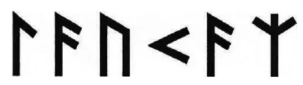

Ritual Grimoire
Loading a Rune Tine (LAUKAZ)
A complete example of the talismanic loading process, demonstrated through the LAUKAZ formula. The techniques outlined here are applicable to all types of runic talismans and valuable across all forms of rune work.

The LAUKAZ Formula
This taufr is built on the runic formula LAUKAZ, which appears frequently on ancient bracteate talismans. Literally, the word means "leek" (allium porrum), a symbol of growth and well-being, and also an alternate name for the L-rune. The Proto-Indo-European root from which the Germanic laukaz derives is leug-* (to bend, turn, wind), a powerful concept common to words associated with magick. This formula promotes healthy growth in the field of things hidden and secret (the root word is also the ancestor of the modern English word "lock").
Numerical Analysis
The rune count is 6 (multiple: 2 x 3). The runic total is 52 (multiple: 4 x 13). The number 6 indicates working in the sphere of will-controlled magickal arts (a doubling of the dynamic action of 3). The formula works from a magickal intensification (4) of the vertical force of the numen (13) throughout the year of 52 weeks.
Ideographic Analysis
- Life-law / growth
- Transformational numinous force
- Unconscious wisdom, health
- Conscious knowledge, ability
- Transformational numinous force
- Protection / "higher" life
The complementary conceptual relationships between the first and last runes, and the third and fourth runes, loaded with the magickal "spirit" of the second and fifth runes (which are adjacent to all others), reveal the ideological potency and scope of this formula.
The Rite
Go to the site of the ve in silence, preferably at the hour of dawn. Arrange the implements in an orderly fashion on the altar.
1. Opening
Facing north, perform the opening rite including the ritual kindling of the brazier if necessary, and the Hamarssetning or other suitable opening formula. This invokes the rune might, calls upon the gods and goddesses as witnesses, and banishes detrimental forces.
2. Preparation of Dye (Optional)
If the blood or pigment has not already been prepared, the vitki may grind it on location. Sit facing the altar and grind the pigments with the galdr:
laukaz laukaz laikaz.
(followed by the individual galdrar of all six runes in turn)
Blood of Kvasir, be blessed:
rune-might blooms in the blend!
3. Name Carving
This provides the magickal link between the power of the formula and the person who will benefit from it. Turn the tine so that the reverse side faces up. Using the knife or carver, etch the runes of the recipient's transliterated name into the surface, employing any formulaic devices that integrate the name (and person) with the power of the runic formula. Color the name with the pigments and recite a galdr such as:
Together the bright runes
are bound and blended
with the might of (name)!
This step does not require as intense a level of loading as the taufr formula itself. It is optional if the tine is to be worn on the person at all times.
4. Preliminary Galdr
Standing before the altar with gandr in hand, invoke the forces by thrice intoning the name of each rune in turn over the tine, simultaneously signing the stave shape over the object with each repetition. This makes the material receptive to the streams of these runes.
5. Carving
Sit before the altar in a manner refined through personal experimentation. Carve each stave form while singing the simple sound formula of the rune being etched. For continuants (sounds that can be sustained as long as breath lasts), the pure sound is best. In this inscription, the continuants are l, a, u, and z. The k sound must be coupled with a vowel and repeatedly intoned (ka-ka-ka...). During this process, feel, see, and concentrate on the shining rune might as it willfully flows from the heavens, earth, and subterranean realms via the vitki's center, through the arm and carving tool, into the wood in the shape of the stave. The opening ritual engaged these three realms for this purpose. Visualize the shining "substance" in white, red, or electric blue as it is inlaid into the grooves.
When each stave has been carefully carved, the vitki may wish to cut a straight line across the bottom of the staves, connecting their shapes to bind them together in a single form and field of force (in the case of this inscription, the K-rune hovers unconnected).
6. Coloring
Take up the container of paint or blood. Using the knife point or coloring tool, inlay the staves (and connecting bar) with the vivifying substance. This should be done with care and concentration. Throughout this process, repeatedly sing the complete runic formula: lllllaaauukaaazzz...
This imparts basic life force to the tine. The vitki may wish to pause and concentrate on the power of the runes being loaded into the form, feeling their presence as they vibrate with the substance of the wood in the consciousness of the runester. Once completed, lightly rub a small amount of linseed oil over the surface of the tine. This serves both an aesthetic and a magickal purpose.
7. Enclosure
This is the "dwelling in darkness" before birth, emphasizing the cyclical nature of the runic mysteries. The tine gathers and intensifies its strength during this separation from light. Take up the tine and wrap it in the black cloth, then bind it nine times around with the thong. During this process, intone the following galdr (or one of similar composition):
Into the den
of darkness deep, wend thy way
undoomed yet
nights all nine
wile away thy spell.
Sleep, gain and grow
in weal and wealth.
Lay the tine down on the middle point of the ve and make nine circumambulations with the sun, singing the complete word formula: llllaaauuukaaauz. Return the object to the altar.
8. Birth of the Living Taufr
Unbind the thong and open the cloth while intoning:
Hail thee day!
Hail day's sons,
thou art born
undoomed yet
bearing my will,
wend thy way
toward day's light
with life's law.
Bring the mouth close to the tine and with maximal force of breath intone the holy formula ffffffaaaaaa..., while feeling and visualizing a great outrush of hamingja into the creature. This also infuses the tine with intensified önd. To awaken the now-indwelling wight, take up the gandr and gently knock thrice upon the form.
9. Naming (Optional)
To intensify the animate aspect of the tine, it may be ritually endowed with a name. This name should reflect the purpose of the talisman and is usually feminine in form. A fitting name for this tine might be Grœdhing(a) (growth, or "the growing one"). Pass the tine three times over the firepot while intoning:
Now sparks of fire
with speed spew forth;
lend thy quickness and life.
Lay the tine on the altar. Dip the fingers into the cup and carefully sprinkle the tine with the water or mead:
I sprinkle thee with water
and give thee the name (name).
10. Formali
The tine wight must now be permanently encoded with its special purpose, its "doom" or ørlög. It is newborn but must be provided with "past action" that it may more mightily fulfill its function. This is accomplished through a formali, a formal speech of declaration. Stand in the stadha before the tine lying on the altar and proclaim a formula outlining all requirements, restrictions, and purposes of the talismanic being:
Thou art wight of my will,
and 'tis thy doom to do as here is deemed:
Thou shalt shield my way,
wherever I may wend,
and with Asa-might and main,
shower upon me
thy shining law of life
with a love of lust and shaping wisdom,
that I may grow and gain, whole and hale keep me,
as thou art young the whole year through.
In the name of Odhinn-Vili-Ve
and by the might of Urdhr-Verdhandi-Skuld,
so shall it be.
11. Holding
To bind the might of the rune load to the tine, trace three rings around the wight with the gandr while singing:
Rune-might hold
the holy runes;
whole may they
work my will.
Visualize a containing, semipermeable sphere of shining force around the tine that allows the desired power to enter and be transformed, intensified, and re-projected, while holding the original loading and preventing discharge by contrary forces.
12. Closing
After placing the tine in its intended abode, sing a short closing verse:
Now the work
has been wrought
with the might
of mighty runes,
so shall it be.
Or perform the standard closing ritual.
Placement of the Tine
The living hlutr is now to be placed where it will live its life and perform its function. If the tine is to be worn on the person, it should rest next to the skin, suspended by a cord, thong, or chain made of sympathetic material.